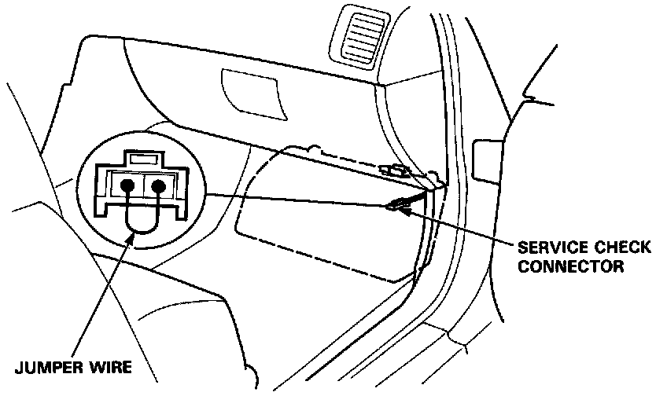
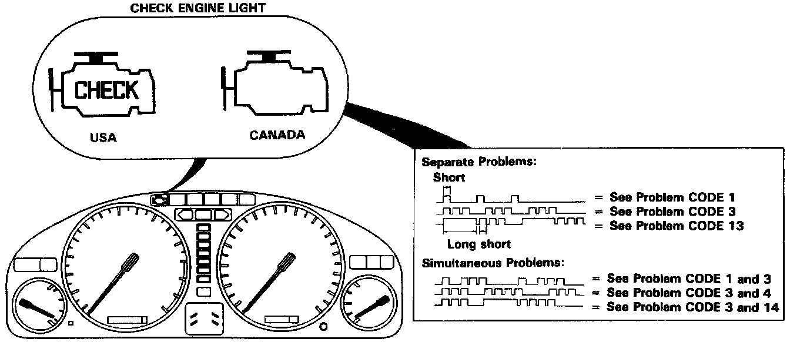

Without Scan Tool
HOW TO DISPLAY AND READ DIAGNOSTIC TROUBLE CODES WITHOUT SCAN TOOLWhen the Check Engine light has been reported on, do the following:

1. Connect the Service Check Connector terminals with a jumper wire as shown (the Service Check Connector is located under the dash on the passenger side of the car).

2. Note the CODE: the Check Engine light indicates a failure code by blinking frequency. The Check Engine light can indicate simultaneous component problems by blinking separate codes, one after another. Problem codes 1 through 9 are indicated by individual short blinks. Problem codes 10 through 59 are indicated by a series of long and short blinks. The number of long blinks equals the first digit, the number of short blinks equals the second digit.
- If codes other than those listed are indicated, verify the code. If the code indicated is not listed here, replace the ECU.
- The Check Engine light may come on, indicating a system problem when, in fact, there is a poor or intermittent electrical connection. First, check the electrical connections, clean or repair connections if necessary.
- The Check Engine light and D4 indicator light may come on simultaneously when the self-diagnosis indicator blinks 6, 7 or 17. Check the PGM-FI system according to the PGM-FI control system troubleshooting, then recheck the D4 indicator light. If it comes on, refer to Transmission Control System.